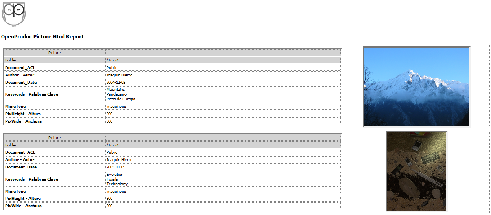
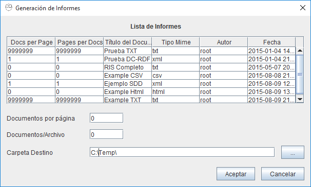

Reports OpenProdoc
1- Introduction
The "Reports" function is developed for showing or exporting metadata from documents and folders in the desired format. The reports cover both functions because depending on the report file is possible to generate an html document formatted for good visibility or documents in CSV or XML format for exporting to other systems.
With the "Reports" function it's possible to obtain pages as:

The operation is as follows:
- A template document whose usual format is text (HTML, XML, CSV, TXT) must be created. "Reports" generated have the same extension / mime type that the document template. That is a template with html extension will generate HTML documents that must meet that standard in their internal structure.
- The document must follow the syntax detailed below. Syntax basically involves combining:
- Literals that will be displayed as introduced,
- Variables representing metadata and will be replaced by the value stored in the metadata.
- and control elements that repeat the elements contained within the boundaries to make nested loops over
- the records/objects in the list
- and, for each object, a loop for all the metadata.
- and, for each metadata, a loop for all the values.
- Templates are not specific to a document or folder type and can be applied to various types. Depending on the use of specific metadata, or the use of a loop for all metadata, the report may be applied to a document type, a type and all its subtypes or is valid for all types of objects (including both folders and documents).
- Once created the template, it must be stored in OpenProdoc, preferably in the "/ System" folder (where already some examples are included) as PD_REPORT document type.
- This document type includes 2 additional metadata, the "number of documents per page" and the "number of pages per file." The reporting function will write the "report header" (content elements between the beginning of the document and the start of the loop of records), then repeat loop region record as many times as "documents per page" are defined, then write the report footer (content elements between the end of the loop of records and the end of the document) and then return to start another "page" with the same procedure. When you have write "number of pages per file", the file will be closed and a new one will be created, and so on until you have write all records from the list. Some examples are included at the end of this page.
- With the template created and stored in OpenProdoc, you can access the functions of reports from several points:
- Folders Menu
- Documents Menu
- Results of Folders Search
- Results of Documents Search
- When requesting reporting, a form with a list of available reports (taking into account the user's permissions, who can access reports according to his permissions (ACL) ) will be presented. The desired report can be selected and can changed (Swing client only) parameters for report generation (records/page and pages/file).
- At each point, the report function will receive a list of items to generate the report (taking into account the user's access permissions on documents). In each case the generated lists are:
- Folders menu: The list contains all folders in the current folder.
- Documents menu: The list contains all the documents in the current folder.
- Search Folders: The list contains all folders retrieved in the search.
- Search Documents: The list contains all the documents retrieved in the query.
- To request the generation, the report will be composed and a reference to the outcome or results will be returned. If multiple files are generated with reports, in Web client a compressed file with all reports you will be returned.

2- Syntax
The syntax of the OPD reports is as follows:
- If the line starts with the character "#" is considered a comment and content of that line is totally ignored.
- Before evaluating the line trailing spaces are removed.
- If the line starts with the character "+", the line will be added to the previous one after evaluation deleting the character “+”, otherwise it's evaluated and write in a new line. Evaluation is made, in both cases, following the next lines.
- If line starts by “@OPD”, the line is evaluated as a "reserved word" from the next list, otherwise it is evaluated as a literal string and write to the file "as is".
- The reserved words list is:
- @OPD_DOCSLOOP_S: Starts the records loop. All content from the beginning to the end (OPD_DOCSLOOP_E) of records loop is repeated for all objects of the list, whether literal or reserved words. After @OPD_DOCSLOOP_S the character "-" can appear followed by a list of names of types of documents or Folders separated by the "," (eg "OPD_DOCSLOOP_S -Contract, Passport "). Such objects included in the list are ignored and will not be write on the report and the loop will not be repeated for them.
- @OPD_DOCSLOOP_E: Ends the Records loop
- @OPD_ATTRLOOP_S: Starts the Metadata loop. All content from the beginning to the end (@OPD_ATTRLOOP_E) metadata loop will be repeated for all metadata/attributes of each document/folder, whether literal or reserved words. After that the character can appear "-" followed by a list of metadata names separated by the "," (eg "@OPD_ATTRLOOP_S -PDID, LockedBy, ParentId"). The metadata included in the list are ignored and will not be write in the report and the loop will not be repeated for them. Following @OPD_ATTRLOOP_S and before "-" 2 operator be included: "*" and "?". The "*" (eg. "@OPD_ATTRLOOP_S*") indicates that OPD must retrieve all the metadata of the document or folder, not just those obtained in the search and returned in the list. This can occur if you search documents of a document type and its subtypes. In that case only metadata of document type father will be returned so that the structure is homogeneous. The "?" indicates that there should be NOT included in the metadata loop the empty metadata.
- @OPD_ATTRLOOP_E: Ends the metadata loop
- @OPD_VALLOOP_S: Values loop start (for multivalued attributes). All content (whether literal or reserved words) from the beginning to the end (@OPD_VALLOOP_E) of the values loop will be repeated for all values of metadata.
- @OPD_VALLOOP_E: Ends the values loop (for multivalued attributes)
- @OPD_GLOBPARENT: This expression will be replaced by the full path of the containing folder on which the search or list of items has started (eg. "/ Files")
- @OPD_PARENT: This expression will be replaced by the full path of the parent folder of the document or folder within the current list (eg. "/Contracts/S-12345/Application", "/Contracts/Z-67896/Approved"). This variable can be different on each item if the report is generated after a search (which can locate elements at different levels) and will be equal when the items shown are in the same folder.
- @OPD_NAME_ATTR: Shows the internal technical name of an attribute within the attributes loop. It can be expressed as @OPD_NAME_ATTR_* (for all attributes) or @OPD_NAME_ATTR_NombreInternoAtributo (eg. @OPD_NAME_ATTR_TITLE). It can followed by ":" and an integer that indicates the length of the text. If the value is less, it is truncated, otherwise spaces will be added. (Eg. @OPD_NAME_ATTR _*:20).
- @OPD_UNAME_ATTR: Shows the user/visible name of an attribute within the attributes loop. It can be expressed as @OPD_UNAME_ATTR_* (for all attributes) or @OPD_UNAME_ATTR_NombreInternoAtributo (eg. @OPD_UNAME_ATTR_TITLE). It can followed by ":" and an integer that indicates the length of the text. If the value is less, it is truncated, otherwise spaces will be added. (Eg. @OPD_UNAME_ATTR_*:20).
- @OPD_VAL_ATTR: Shows the value of an attribute within the attributes loop. It can be expressed as @OPD_VAL_ATTR_* (for all attributes) or @OPD_VAL_ATTR_NombreInternoAtributo (eg. @OPD_VAL_ATTR_TITLE). It can followed by ":" and an integer that indicates the length of the text. If the value is less, it is truncated, otherwise spaces will be added. (Eg. @OPD_VAL_ATTR_*:20).
- @OPD_REF_ATTR: Attribute value or reference. The behavior and syntax is the same as in the case of @OPD_VAL_ATTR, but if the variable is thesaurus, reference to a mime type or to the containing folder, rather than showing the value of the variable (element identifier, Eg "12e434_43af43 ") will show the value of the referenced term (eg" Portugal ").
- @OPD_RECCOUNT: Number of records written to the report until the current record.
- @OPD_TOTALREC: Total number of records of the report (0 if the report was generated with Cursor, not with Vector).
- @OPD_PAGCOUNT: Number of pages written to the report until the current record.
- @OPD_URLOPACREPORT: Url for renerating the report from OPAC with the same parameetrs (ONLY APPLIES FOR REPORTS CALLED FROM OPAC).
Examples:
Assuming two document types (simplified for clarity) with the metadata (in brackets "username" metadata):
PD_DOCS
- PDId (PDId)
- Title (Document_Title)
- DocDate (Document_Date)
Dossier (subtipe of PD_DOCS):
- PDId (PDId)
- Title (Document_Title)
- DocDate (Document_Date)
- Author (Author name)
- Keywords (Keywords)
And a result list:
PD_DOCS:
- PDId=1001
- Title="Document 1"
- DocDate=2015/02/15
PD_DOCS:
- PDId=1002
- Title="Document 2"
- DocDate=
Informe:
- PDId=1003
- Title="Document 3"
- DocDate=2001/04/25
- Autor="John Smith"
- Keywords="Economy", "Documentation"
This report template:
# Example of report tamplate. This comment will not be shown
================================================================================
Folder Content:
+@OPD_GLOBPARENT
# Records loop start
@OPD_DOCSLOOP_S
Doc:
+@OPD_RECCOUNT
--------------------------------------------------------------------------------
Identifier=
+@OPD_REF_ATTR_PDID
@OPD_UNAME_ATTR_TITLE
+=
+@OPD_REF_ATTR_TITLE
@OPD_UNAME_ATTR_DocDate
+=
+@OPD_REF_ATTR_DocDate
--------------------------------------------------------------------------------
# Records loop End
@OPD_DOCSLOOP_E
Total Docs=
+@OPD_RECCOUNT
+ Page:
+@OPD_PAGCOUNT
================================================================================
Will create this report:
================================================================================
Folder Content:/Report Test
Doc:1
--------------------------------------------------------------------------------
Identifier=1001
Document_Title=Document 1
Document_Date=2015-02-15
--------------------------------------------------------------------------------
Doc:2
--------------------------------------------------------------------------------
Identifier=1002
Document_Title=Document 2
Document_Date=
--------------------------------------------------------------------------------
Doc:3
--------------------------------------------------------------------------------
Identifier=1003
Document_Title=Document 3
Document_Date=2001-04-25
--------------------------------------------------------------------------------
Total Docs=3 Page:1
================================================================================
View: Folders Search y Documents Search
Help Index OpenProdoc